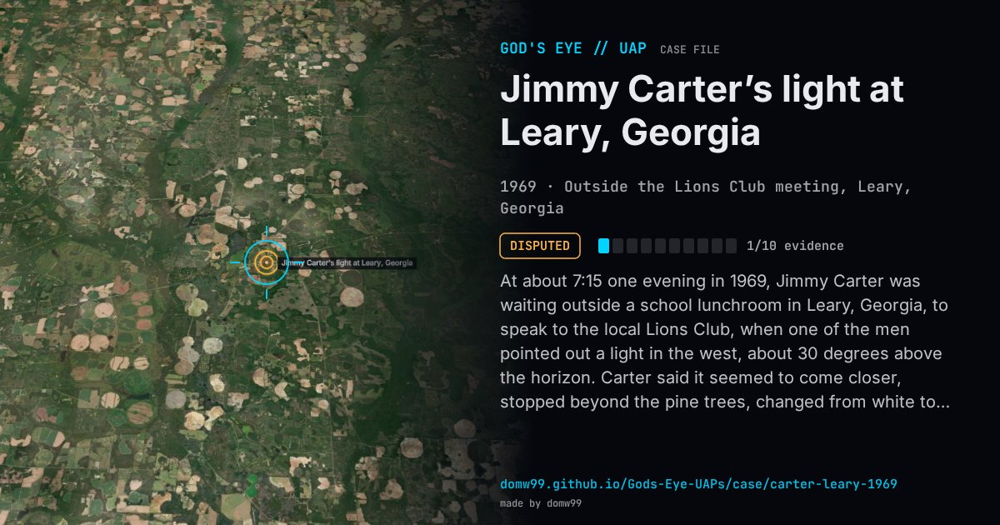

Jimmy Carter’s light at Leary, Georgia

At about 7:15 one evening in 1969, Jimmy Carter was waiting outside a school lunchroom in Leary, Georgia, to speak to the local Lions Club, when one of the men pointed out a light in the west, about 30 degrees above the horizon. Carter said it seemed to come closer, stopped beyond the pine trees, changed from white to blue, then red, then white, and then receded, after 10 to 12 minutes. As governor, in September 1973, he filled in a sighting report for the International UFO Bureau, dating it October 1969; the Lions Club’s own records show his Leary speech was on January 6, 1969, and the club had disbanded before October. Investigators in 1976 found that most of those present did not remember the event. On January 6, Venus was a brilliant evening star in the direction Carter gave, which is the accepted explanation; Carter said later that he took it for something unexplained, not for a spacecraft.
Explanation
Robert Sheaffer and Allan Hendry identified it as Venus, which was near its greatest brilliancy in the western sky that evening; a later analysis proposed a barium-cloud release from a rocket fired at Eglin AFB. Carter himself said he never thought it was an alien craft.
What was seen
Shape: A bright light, as bright as the Moon, changing from white to blue to red and back
Witnesses: Jimmy Carter, then a Georgia state senator and Lions Club district governor, and about ten others
Duration: 10 to 12 minutes
Sources
- Carter’s report to the International UFO Bureau (NICAP copy)
- Robert Sheaffer — President Carter’s “UFO” is identified as the planet Venus (1977)
- Wikipedia — Jimmy Carter UFO incident